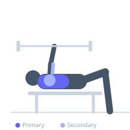

Exercise guide / Smith Machine Bench Press
Smith Machine Bench Press
The Smith machine bench press is a horizontal pressing exercise performed on a Smith machine, where the barbell is fixed within vertical or slightly angled rails. The constrained bar path reduces the demand on stabilizing muscles and allows safer solo training for pressing, though it alters the natural bar path compared to a free barbell. Useful for beginners, solo training, and specific overloading techniques.
Primary muscles
pectoralis major sternal
pectoralis major clavicular
Secondary muscles
deltoid anterior
triceps lateral head
triceps medial head
Stabilizers
pectoralis minor
Equipment
Smith Machine
Flat Bench
Optional
Adjustable Bench (Incline / Decline)


Starting position
- Position a flat bench inside the Smith machine. Lie on the bench so the bar is directly above the mid-chest. Grip the bar slightly wider than shoulder-width. Rotate the bar to disengage the hooks.
Setup
- Adjust bench position so that the bar tracks over the mid-chest when lowered. Set the safety hooks at a height 1–2 inches above the chest as a fail-safe.
Steps
- Step 1: Lie on the bench under the Smith machine bar. Grip the bar wider than shoulder-width with an overhand grip.
- Step 2: Rotate the bar to release it from the hooks. Extend arms to hold the bar above the chest.
- Step 3: Inhale and lower the bar in a controlled manner to touch the mid-chest.
- Step 4: Exhale and press the bar back up to the starting position. At the end of your set, rotate the bar back onto the hooks.
Coaching cues
- Maintain a natural arch in the lower back — do not flatten excessively
- Drive through the mid-foot to maintain leg drive even on the bench
Breathing
- Inhale as the bar descends; exhale as you press it up.
Range of motion
- Lower bar to touch the chest, then press to full extension.
Tempo
- 2-0-2-0
Common mistakes
- Placing the bench too far forward or back, causing the bar to track over the neck or abdomen
- Forgetting to re-engage the safety hooks between sets
Safety
- Always set safety hooks before beginning to protect against failure
- Some Smith machines have an angled track — position accordingly
Training
- strength: 3–6 reps
- hypertrophy: 8–15 reps
- endurance: 15–20 reps
- strength: 3–5 sets
- hypertrophy: 3–4 sets
- endurance: 2–3 sets
- Rest: {'strength': 180, 'hypertrophy': 90, 'endurance': 45}